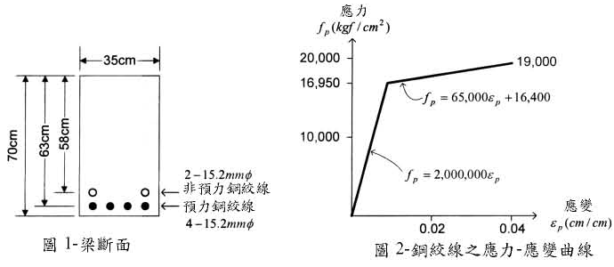
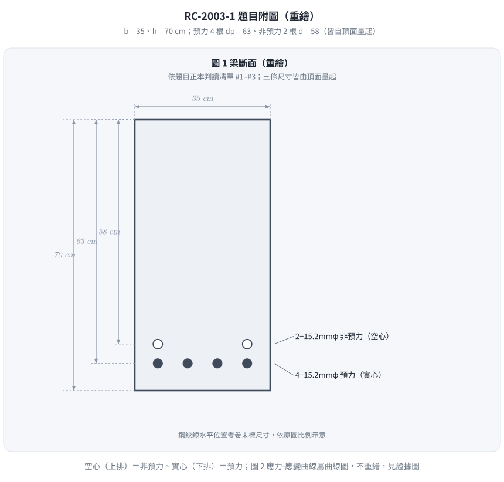
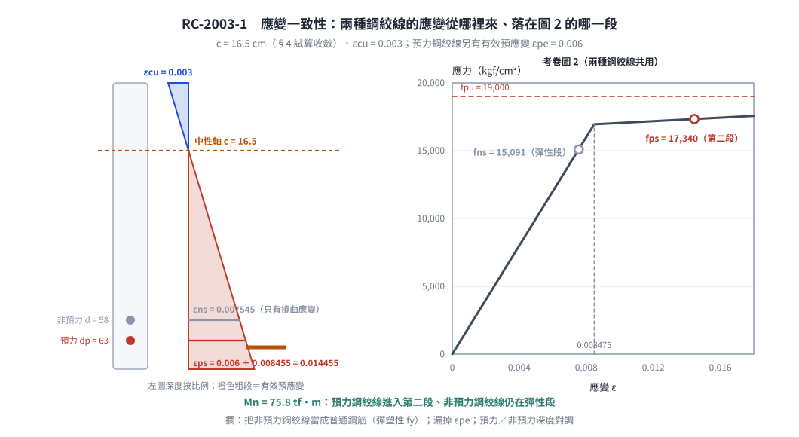

📄 題目正本：考卷原文・附圖・判讀清單（已確認）
RC-2003-1 題目正本
本檔只記錄考卷上寫了什麼、圖上畫了什麼，不含任何解法。解析見同資料夾
RC-2003-1.md。
判讀清單已經使用者確認（凍結）；本檔原則上不再修改（改動須回考卷原圖並記 log）。
| 項目 | 內容 |
|---|---|
| 考卷 | raw/exams/RC-2003_鋼筋混凝土設計與預力.pdf（單頁掃描影像，正面），第一題 |
| 考年 | 民國 92 年（2003） |
| 配分 | 20 分 |
| 附圖 | RC-2003-1-fig-2.png（圖 1 梁斷面＋圖 2 鋼絞線應力-應變曲線；2026-11-14 由考卷掃描原生解析度重新擷取，無游標）；既有 RC-2003-1-fig-1.png 為同一圖、圖 2 縱軸標題旁壓有滑鼠游標，保留不刪 |
| 判讀狀態 | 已確認（2026-11-14 使用者確認；轉錄 2026-11-14；考卷為 1246×3676 px 掃描影像，原生解析度目視，放大不增細節；盲讀後才比對既有解析） |
1. 考卷原文（逐字）
一、有一配置預力(prestressed)暨非預力(nonprestressed)鋼絞線之梁斷面如圖 1 所示，試回答下列問題。（20 分）
已知條件：
㈠ $f'_c = 350\,kgf/cm^2$
㈡標稱直徑 $\phi = 15.2mm$ 預力混凝土用鋼絞線之標稱截面積為 $138.7mm^2$，其 $f_{pu} = 19{,}000kgf/cm^2$，$E_{ps} = 2{,}000{,}000kgf/cm^2$，而鋼絞線之抗拉應力-應變關係曲線如圖 2 所定義
㈢千斤頂施加於預力鋼絞線之應力達 $14{,}000kgf/cm^2$
㈣預力損失估計為 $2{,}000kgf/cm^2$
欲求：限用應變一致性較精確之方式，計算圖 1 梁斷面之標稱彎矩強度 $M_n$ 之值
2. 考卷給的公式、附表與參數
- 題文數值：$f'_c=350$；鋼絞線 15.2 mm、$A=138.7$ mm²／根、$f_{pu}=19{,}000$、$E_{ps}=2.0\times10^6$ kgf/cm²；千斤頂應力 14,000；預力損失 2,000 kgf/cm²。
- 圖 2 鋼絞線應力-應變曲線（雙直線）：彈性段 $f_p = 2{,}000{,}000\,\varepsilon_p$；降伏後 $f_p = 65{,}000\,\varepsilon_p + 16{,}400$；轉折點縱座標標 16,950；曲線末端標 19,000（約在 $\varepsilon_p=0.04$）。縱軸刻度 10,000、16,950、20,000；橫軸刻度 0.02、0.04。
- 沒有給：混凝土極限應變 $\varepsilon_{cu}$、$\beta_1$、$E_c$、是否有握裹（先拉／後拉）、非預力鋼絞線是否用同一條應力-應變曲線、$\phi$（題目只問標稱 $M_n$）。
- 卷首注意事項：㈠不必抄題，作答時請將試題題號及答案依照順序寫在試卷上，於本試題上作答者，不予計分。㈡可以使用電子計算器，但需詳列解答過程。
3. 附圖

圖面文字照錄：35cm、70cm、63cm、58cm、2−15.2mmφ、非預力鋼絞線、預力鋼絞線、4−15.2mmφ、圖 1-梁斷面；應力 f_p(kgf/cm²)、20,000、16,950、10,000、19,000、f_p = 65,000ε_p +16,400、f_p = 2,000,000ε_p、0.02、0.04、應變 ε_p(cm/cm)、圖 2-鋼絞線之應力-應變曲線。
4. 判讀清單
「把握」標不確定者請優先確認；解讀類項目（題目用字的意思）另標「解讀」。
| # | 項目 | 判讀 | 圖上／題文依據 | 把握 |
|---|---|---|---|---|
| 1 | 預力／非預力鋼絞線深度對應 | 預力 4 根（下排實心）$d_p = 63$ cm；非預力 2 根（上排空心）$d = 58$ cm | 58 cm 尺寸線下端落在上排空心圓列、63 cm 下端落在下排實心圓列（掃描原圖目視）；引線文字對應空心＝非預力、實心＝預力 | 確定 |
| 2 | 斷面 | 矩形 $b = 35$、$h = 70$ cm，三條尺寸線皆由頂面量起 | 尺寸線上端皆對齊頂面 | 確定 |
| 3 | 鋼絞線面積 | 每根 138.7 mm²＝1.387 cm²；$A_{ps} = 4 \times 1.387$、非預力 $2 \times 1.387$ | 題文㈡、圖 1 根數 | 確定 |
| 4 | 有效預應力 | 千斤頂 14,000 減損失 2,000（題目只給這兩個數） | 題文㈢㈣ | 確定（解讀） |
| 5 | 非預力鋼絞線的應力-應變 | 題文「鋼絞線之抗拉應力-應變關係曲線如圖 2 所定義」未限定預力或非預力，解讀為兩者共用圖 2 曲線 | 題文㈡ | 確定（解讀） |
| 6 | 圖 2 轉折點 | 兩直線交點：$2\times10^6\varepsilon = 65{,}000\varepsilon + 16{,}400$ → $\varepsilon \approx 0.00848$、$f \approx 16{,}950$，與圖上標註一致 | 圖 2 兩式與縱軸 16,950 | 確定 |
| 7 | 圖 2 末端 | 標 19,000（＝$f_{pu}$），位置約 $\varepsilon_p = 0.04$；考卷未寫斷裂應變數值 | 圖 2 曲線末端與橫軸刻度 0.04 位置相近 | 確定（解讀） |
| 8 | 問的量 | 標稱彎矩強度 $M_n$（非設計強度），且「限用應變一致性」方法 | 題文欲求 | 確定 |
| 9 | 考卷沒有給 | $\varepsilon_{cu}$、$\beta_1$、$E_c$、握裹與否（先拉／後拉）、$\phi$ | 全題 | 確定（作答須自行假設） |
轉錄：2026-11-14（RC-U4-1 題目正本推廣・批 1）
確認：2026-11-14 使用者確認（RC-U4-1 題目正本推廣・批 1，關卡一）
考題編號：RC-2003-1
主分類： RC-U4-1 預力梁斷面應力分析
副分類： 無
設計法： 混合（應變相容法求標稱彎矩強度）
標籤： 部分預力梁 應變相容法 非預力鋼絞線 雙線性應力應變 標稱彎矩強度 fps精確法 β₁折減
1. 題目（考卷原文見題目正本）
考卷原文、公式／附表、附圖與判讀清單（已確認）見
RC-2003-1-problem.md。本節只列解題時最容易讀錯的地方與本解使用的記號；題意以題目正本為準。

重繪自考卷圖 1，依題目正本判讀清單 #1–#3。本圖攔下「63／58 對調」：預力 4 根 d_p＝63、非預力 2 根 d＝58。圖 2 應力-應變曲線屬曲線圖，不重繪，見題目正本證據圖。
常見誤讀
| 項目 | 正確判讀 | 常見誤讀 |
|---|---|---|
| 預力／非預力深度（#1） | 預力 4 根（下排實心）$d_p=63$；非預力 2 根（上排空心）$d=58$ | 兩者對調 |
| 有效預應力（#4） | 千斤頂 14,000 − 損失 2,000 → $f_{pe}=12{,}000$ kgf/cm² | 直接用 14,000 |
| 非預力鋼絞線的應力-應變（#5） | 與預力鋼絞線共用圖 2 雙直線曲線 | 當成普通鋼筋彈塑性 |
| 問的量（#8） | 標稱 $M_n$，限用應變一致性 | 答 $\phi M_n$ 或用 $f_{ps}$ 近似式 |
本解記號： $A_{ps}=4\times1.387=5.548$ cm²、$A_{ns}=2\times1.387=2.774$ cm²；圖 2 轉折點 16,950 kgf/cm²（$\varepsilon=0.008475$）本解記為 $f_{py}$（比例限），考卷未用此符號。
自行假設（考卷未給）： $\varepsilon_{cu}=0.003$、$\beta_1$ 依規範、有握裹。
2. 考題核心精神與出題者意圖
核心觀念： 部分預力梁的 fps 不能用簡化近似公式，必須以應變相容（strain compatibility）法，配合實際的非線性應力–應變曲線，迭代求解中性軸位置，才能得到各層鋼絞線的真實應力。
出題者測驗：
- 理解部分預力梁的配筋組成（預力 + 非預力鋼絞線）
- 正確計算有效預應變 $\varepsilon_{pe}$，並以此為初始應變基礎
- 能在雙線性應力–應變曲線上正確定位（線性段 vs. 應變硬化段）
- 平衡方程的建立與迭代收斂
陷阱： 非預力鋼絞線的初始應變為零（不同於預力鋼絞線），兩者共用相同的材料應力–應變曲線但初始條件不同。
3. 解題戰略地圖與陷阱分析
計算步驟：
- 整理斷面幾何與面積
- 計算 $\beta_1$（f'c=350，超過280需折減）
- 計算有效預應變 $\varepsilon_{pe}$
- 假設中性軸深度 $c$，計算各層應變
- 查雙線性曲線，得到各層應力
- 驗證壓力=拉力，迭代至收斂
- 計算 $M_n$
關鍵陷阱：
| # | 陷阱 | 說明 |
|---|---|---|
| ① | $\beta_1$ 需折減 | f'c=350 > 280，$\beta_1 = 0.85 - 0.05 \times \frac{350-280}{70} = 0.80$ |
| ② | 非預力鋼絞線初始應變 = 0 | 不加預拉力，僅靠撓曲變形產生應變 |
| ③ | 預力鋼絞線總應變 = 預應變 + 撓曲增量 | 需將 $\varepsilon_{pe}$ 疊加 |
| ④ | 雙線性曲線的段落判斷 | 需先判斷應變落在哪一段，再代入正確公式 |
3.5 變數層次分析（Variable Hierarchy Analysis）
複習提示：第一次解題後，在每個卡住的知識點旁標記
⚠；第二次複習時只看有⚠的項目。
最終目標
求部分預力矩形梁之標稱彎矩強度 $M_n$（應變相容精確法）
本題關鍵公式（依計算順序）
$$\text{Step 1: } \varepsilon_{pe} = \frac{f_{pe}}{E_{ps}}$$
$$\text{Step 2: } \varepsilon_{ps} = \boxed{\varepsilon_{pe}} + \frac{d_p - c}{c}\cdot\varepsilon_{cu}$$
$$\text{Step 3: } \varepsilon_{ns} = \frac{d_{ns} - c}{c}\cdot\varepsilon_{cu}$$
$$\text{Step 4（雙線性曲線）: } f_p = \begin{cases}E_{ps}\cdot\varepsilon_p & \varepsilon_p \le \varepsilon_{py} \\ 65{,}000\varepsilon_p + 16{,}400 & \varepsilon_p > \varepsilon_{py}\end{cases}$$
$$\text{Step 5（平衡）: } 0.85f'_c\cdot\boxed{\beta_1}\cdot c\cdot b = \boxed{f_{ps}}\cdot A_p + \boxed{f_{ns}}\cdot A_{ns}$$
$$\text{Step 6: } a = \boxed{\beta_1}\cdot\boxed{c}$$
$$\text{Step 7: } M_n = \boxed{f_{ps}}\cdot A_p\cdot\!\left(d_p - \frac{\boxed{a}}{2}\right) + \boxed{f_{ns}}\cdot A_{ns}\cdot\!\left(d_{ns} - \frac{\boxed{a}}{2}\right)$$
L1：題目直接給定
| 符號 | 數值 | 說明 |
|---|---|---|
| $b$ | 35 cm | 梁寬 |
| $h$ | 70 cm | 梁總高 |
| $d_p$ | 63 cm | 預力鋼絞線有效深度 |
| $d_{ns}$ | 58 cm | 非預力鋼絞線有效深度 |
| $A_p$ | 5.548 cm² | 4×1.387 cm² |
| $A_{ns}$ | 2.774 cm² | 2×1.387 cm² |
| $f'_c$ | 350 kgf/cm² | |
| $f_{pu}$ | 19,000 kgf/cm² | |
| $E_{ps}$ | 2,000,000 kgf/cm² | |
| $f_{pe}$ | 12,000 kgf/cm² | 14,000−2,000 |
| $\varepsilon_{cu}$ | 0.003 | ACI 混凝土極限壓應變 |
L2：需知識點推導
材料常數
| 符號 | 公式／來源 | 卡關? |
|---|---|---|
| $\beta_1$ | $0.85 - 0.05\times\frac{350-280}{70} = 0.80$ | |
| $\varepsilon_{py}$ | $16{,}950/2{,}000{,}000 = 0.008475$ | |
| $\varepsilon_{pe}$ | $12{,}000/2{,}000{,}000 = 0.006$ |
應變相容迭代（取 c=16.5 cm）
| 符號 | 公式／來源 | 卡關? |
|---|---|---|
| $\varepsilon_{ps}$ | $0.006 + (63-16.5)/16.5\times0.003 = 0.01446$ | |
| $f_{ps}$ | $65{,}000\times0.01446 + 16{,}400 = 17{,}340\ \text{kgf/cm}^2$ | |
| $\varepsilon_{ns}$ | $(58-16.5)/16.5\times0.003 = 0.007545$ | |
| $f_{ns}$ | $2{,}000{,}000\times0.007545 = 15{,}091\ \text{kgf/cm}^2$ | |
| $a$ | $0.80\times16.5 = 13.2$ cm | |
| $M_n$ | 見 Step 7 |
L3：深層知識（不懂就卡住）
| 知識點 | 說明 | 卡關? |
|---|---|---|
| 部分預力梁兩類鋼絞線的初始條件差異 | 預力鋼絞線有 $\varepsilon_{pe}$；非預力鋼絞線初始應變為零 | |
| $\beta_1$ 需隨 f'c 折減 | ACI/台灣規範：f'c > 280 時每增加 70 kgf/cm² 減 0.05 | |
| 雙線性應力應變曲線的使用 | 計算出應變後先判斷段落，再代對應公式 | |
| 平衡方程需迭代 | 因 fps、fns 均為 c 的非線性函數，需試算 c 至收斂 |
4. 步驟化詳細計算過程
Step 1 斷面幾何與材料
$$A_p = 4 \times 1.387 = 5.548\ \text{cm}^2 \quad (d_p = 63\ \text{cm})$$
$$A_{ns} = 2 \times 1.387 = 2.774\ \text{cm}^2 \quad (d_{ns} = 58\ \text{cm})$$
$$f'_c = 350\ \text{kgf/cm}^2 \Rightarrow \beta_1 = 0.85 - 0.05 \times \frac{350-280}{70} = \boxed{0.80}$$
Step 2 有效預應變
$$\varepsilon_{pe} = \frac{f_{pe}}{E_{ps}} = \frac{12{,}000}{2{,}000{,}000} = \boxed{0.006}$$
此值小於比例限應變 0.008475，預力鋼絞線在服務載重下仍在線性段。
Step 3 應變相容迭代
比例限（proportional limit）：
$$\varepsilon_{py} = \frac{f_{py}}{E_{ps}} = \frac{16{,}950}{2{,}000{,}000} = 0.008475$$
混凝土壓力：
$$C_c = 0.85 f'_c \cdot \beta_1 c \cdot b = 0.85 \times 350 \times 0.80 \times c \times 35 = 8{,}330\,c\ (\text{kgf})$$
預力鋼絞線應變（含初始預應變）：
$$\varepsilon_{ps} = \varepsilon_{pe} + \frac{d_p - c}{c}\varepsilon_{cu} = 0.006 + \frac{63-c}{c}\times 0.003$$
非預力鋼絞線應變（初始應變為零）：
$$\varepsilon_{ns} = \frac{d_{ns} - c}{c}\varepsilon_{cu} = \frac{58-c}{c}\times 0.003$$
試算 c = 16.5 cm：
$$\varepsilon_{ps} = 0.006 + \frac{63-16.5}{16.5}\times 0.003 = 0.006 + 2.818\times 0.003 = 0.006 + 0.008455 = 0.01446$$
由於 $\varepsilon_{ps} = 0.01446 > \varepsilon_{py} = 0.008475$，代入應變硬化段：
$$f_{ps} = 65{,}000\times 0.01446 + 16{,}400 = 939.9 + 16{,}400 = \boxed{17{,}340\ \text{kgf/cm}^2}$$
檢核：$f_{ps} = 17{,}340 < f_{pu} = 19{,}000$ ✓
$$\varepsilon_{ns} = \frac{58-16.5}{16.5}\times 0.003 = 2.515\times 0.003 = 0.007545$$
由於 $\varepsilon_{ns} = 0.007545 < \varepsilon_{py} = 0.008475$，代入線性段：
$$f_{ns} = 2{,}000{,}000\times 0.007545 = \boxed{15{,}091\ \text{kgf/cm}^2}$$
驗證平衡：
$$C_c = 8{,}330 \times 16.5 = 137{,}445\ \text{kgf}$$
$$T = f_{ps}\cdot A_p + f_{ns}\cdot A_{ns} = 17{,}340\times 5.548 + 15{,}091\times 2.774$$
$$= 96{,}181 + 41{,}862 = 138{,}043\ \text{kgf}$$
誤差 = $(138{,}043 - 137{,}445)/137{,}445 \approx 0.4\%$ ✓ 收斂
策略註解：此誤差小於1%，工程上可接受，取 $c = 16.5\ \text{cm}$ 為解。

圖 1 兩種鋼絞線的應變來源與在圖 2 上的位置。非預力鋼絞線沒有初始應變、仍在彈性段；預力鋼絞線多了 $\varepsilon_{pe}$、進入第二段——這張圖攔三個錯：把非預力鋼絞線當成普通鋼筋（彈塑性 $f_y$）、漏掉 $\varepsilon_{pe}$、以及預力與非預力深度對調。
Step 4 等值矩形應力塊深度
$$a = \beta_1 \cdot c = 0.80 \times 16.5 = \boxed{13.2\ \text{cm}}$$
Step 5 標稱彎矩強度
$$M_n = f_{ps}\cdot A_p\!\left(d_p - \frac{a}{2}\right) + f_{ns}\cdot A_{ns}\!\left(d_{ns} - \frac{a}{2}\right)$$
$$= 17{,}340\times 5.548\times\!\left(63 - 6.6\right) + 15{,}091\times 2.774\times\!\left(58 - 6.6\right)$$
$$= 96{,}181\times 56.4 + 41{,}862\times 51.4$$
$$= 5{,}424{,}596 + 2{,}151{,}707$$
$$= \boxed{7{,}576{,}303\ \text{kgf}\cdot\text{cm} \approx 75.8\ \text{tf}\cdot\text{m}}$$
5. 關鍵爭議點與進階探討
1. 應變相容法 vs. ACI 近似公式的差異
ACI 近似公式（$f_{ps} = f_{pu}[1 - \gamma_p/\beta_1 \cdot \rho_p f_{pu}/f'_c]$）適用於有黏結有預力的情況，且假設鋼絞線降伏。本題同時包含非預力鋼絞線，且使用雙線性曲線，題目明確要求精確法，若誤用近似公式將失分。
2. 非預力鋼絞線的定位
兩種鋼絞線同為 15.2mm 相同材料，但「非預力」表示未施加預拉力，在計算極限強度時其初始應變為零，需特別注意。在部分預力設計中，非預力鋼絞線可提升延性，是此類題型的核心概念。
3. 延性檢核（補充）
$$\varepsilon_t = \varepsilon_{ps} - \varepsilon_{pe} = 0.01446 - 0.006 = 0.00846 > 0.005$$
淨拉應變 $\varepsilon_t$ 超過 0.005，屬拉力控制斷面，$\phi = 0.9$，斷面具有足夠延性。
修正日期：2026-11-14（§1 改為指向題目正本，重繪題目附圖 figs/RC-2003-1-fig-1-problem.svg）
圖解補繪：2026-11-14（向量圖 1 張 figs/RC-2003-1-fig-2-strain.svg，腳本 gen_RC-2003-1.py，可重跑；腳本檔尾對 §4／§5 公佈值做 assert）